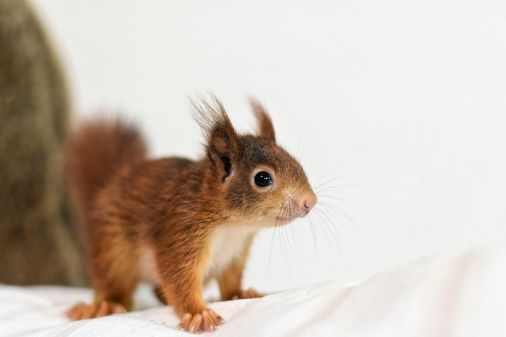

From the first time we met in daycare, Jaime and I have tried talking to animals, we did not have many friends so we seeked out furry friends instead!
We decided to bring that sad sad childhood magic to reality with
The Animal Translator
Our hope for this product is that it helps to shorten the wide gap between humans and animals, allowing us to be able to
take better care of them, and for them to be able to help further humanity and its causes even further.

